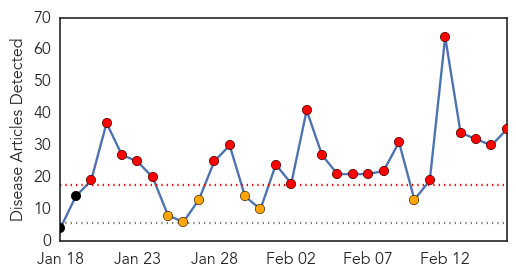
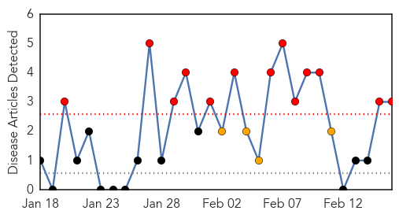

Swine Flu
30-Day Web Trend
22 alerts, 6 warnings

30-Day Twitter Trend
0 alerts, 0 warnings

Article Locations

Article Confidences

Top Articles:
- 1.000
- 22 confirmed cases of swine flu in Chhattisgarh
- 0.999
- 2 swine flu deaths in state
- 0.999
- Himachal fully prepared to tackle swine flu: Health min
- 0.999
- Health dept struggles to contain H1N1
- 0.999
- Silver lining: No mutation of H1N1, says study
- 0.999
- First city resident succumbs to swine flu, number of patients 114
- 0.998
- Swine flu kills over 500 in India so far this year
- 0.997
- Swine flu takes 12 more lives in Rajasthan; total toll reaches 165
- 0.997
- Health Ministry 'closely monitoring' situation across India
- 0.997
- Swine Flu Death Toll Rises to 150 in Gujarat
- 0.997
- As Swine Flu Cases Rise Rapidly in Rajasthan, Tourism Officials are a Worried Lot
- 0.997
- Health officials brush swine flu threat under the carpet: DAK
- 0.997
- Rise in H1N1 deaths causes concern
- 0.996
- In Fight Against Swine Flu, Patients' Families Rue Lack of Facilities
- 0.995
- India's swine flu death toll rises to 485
- 0.995
- Suspected swine flu patient dies in private hospital
- 0.994
- Uttar Pradesh: 9 new cases of swine flu reported in Lucknow; toll reaches 78
- 0.992
- Swine Flu Patients Shun District Surveillance Teams
- 0.988
- Andheri man swine flu’s first victim in city
- 0.987
- More hi-tech labs for testing H1N1 virus on anvil
- 0.979
- AMU closed after swine flu death
- 0.972
- Indore: AAP Stages Protest Against Rise in Swine Flu Cases
- 0.968
- Indore: AAP stages protest against rise in swine flu cases
- 0.958
- Swine flu samples overwhelm testing facility in Nagpur
- 0.955
- AAP protests against rising swine flu cases in Indore
- 0.945
- H1N1: 10 positive cases, two deaths since January in Mangaluru
- 0.943
- 8-year-old girl dies of swine flu in Nagpur
- 0.841
- Key swine flu hospital out of Tamiflu
- 0.837
- One succumbs to H1N1 in Mysuru
- 0.835
- NPPA asks pharma companies to keep adequate stock of swine flu drugs
- 0.803
- All UP govt hosp staff to get anti-flu shots
- 0.757
- City running out of swine flu drug stock
- 0.710
- Indore: AAP stages protest against rise in swine flu cases
- 0.585
- Five more disease testing laboratories..., SahilOnline News
- 0.513
- Swine flu scare: AMU suspends classes, meetings
Top Tweets:
-
No tweets found for Feb 16, 2015
Pertussis
30-Day Web Trend
13 alerts, 4 warnings

30-Day Twitter Trend
0 alerts, 0 warnings

Article Locations

Article Confidences

Top Articles:
Top Tweets:
-
No tweets found for Feb 16, 2015